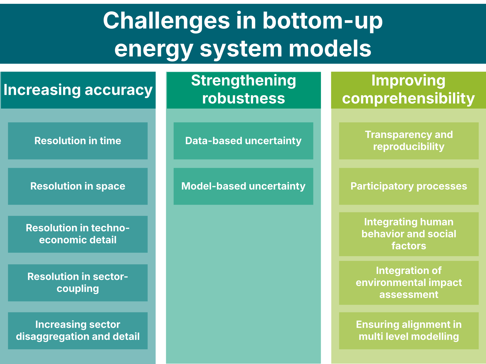

Research explained · PLOS Climate, 2026
The challenges of energy system models: accuracy, robustness and comprehensibility
Governments and regions use energy system models to decide how much solar, wind, storage and heat pumps to build, and when. In a review published in PLOS Climate, Michel Noussan and I collected the main weaknesses of these models and sorted them into three groups: accuracy, robustness and comprehensibility. Here is what each one means and why it affects energy policy.

What is an energy system model?
An energy system model is a mathematical description of how a region or country produces, converts, stores and uses energy. Planners use it to answer questions like: how much solar, wind and storage do we need to reach climate neutrality, and what will it cost? A bottom-up model answers by describing each technology separately, from power plants and heat pumps to batteries, electric vehicles and grids.
Well-known open tools include PyPSA, EnergyPLAN, Calliope, OSeMOSYS and oemof, and TIMES is widely used by energy agencies. Their results feed into national energy and climate plans and regional strategies. A model that is inaccurate, fragile or hard to follow can push those plans in the wrong direction or make them hard to defend in public.
Many reviews have looked at one weakness at a time, such as time resolution, uncertainty or stakeholder involvement. Our goal was to put them side by side so that modellers and decision-makers can see the full list and the trade-offs between items.
Pillar 1: increasing accuracy
Accuracy is how faithfully a model reproduces the real system. It depends on resolution, meaning how much detail the model has in four dimensions:
- Time. Wind and solar output change from hour to hour. A model that uses only a few typical time slices can underestimate curtailment and overestimate the need for baseload plants. Representative days and clustering cut computing time, but they can miss rare events like the Dunkelflaute, the long winter spells with little wind and sun.
- Space. The location of a wind farm or a power line changes the result. A model with one node per country cannot see bottlenecks in the transmission grid.
- Techno-economic detail. How fast a power plant can ramp up, what a start-up costs, how efficient it is at part load, how much a battery loses while it sits idle.
- Sector coupling. Electricity, heat, transport, gas and industry depend on each other. A model of the power sector alone underestimates how much renewable energy heat pumps, electric cars and hydrogen could absorb.
A fifth element is sector disaggregation: splitting buildings by age, industrial heat by temperature, or urban from rural mobility, so that each solution is applied where it fits.
More detail does not automatically mean better results. A model is limited by its weakest dimension, extra resolution needs matching data, and computing time grows fast. The task is to find the mix of resolutions that answers the question at an acceptable computational cost.
Pillar 2: strengthening robustness
A result is robust when its conclusions hold across a plausible range of assumptions. Two kinds of uncertainty threaten it:
- Data-based uncertainty covers future technology costs, fuel prices, demand and weather, including the changing climate (see our summary of climate change risks for Europe's energy system). Some of it can be reduced with better data, some cannot, and some is deep uncertainty that no probability distribution describes well, because the energy transition has no historical precedent.
- Model-based uncertainty comes from the modeller's choices: what to include, how to simplify, which equations and solver to use. Comparing different models and scenarios on the same question is the main way to expose it.
Methods such as Monte Carlo analysis, stochastic programming, robust optimisation and Modelling to Generate Alternatives often need thousands of model runs. Machine learning can help. A surrogate model learns to imitate the full energy model and answers in a fraction of the time. In one of our studies a neural network surrogate cut EnergyPLAN optimisation time by 64%, and in another we used a deep learning surrogate and explainable AI to find which technologies work best together.
Pillar 3: improving comprehensibility
An accurate, robust model still fails if the people who must act on it cannot follow or trust it. Comprehensibility covers five challenges:
- Transparency and reproducibility. Open code and open data, as promoted by the Open Energy Modelling Initiative (openmod).
- Participatory processes. Involving stakeholders throughout the modelling, not only at the start or the end, often with multi-criteria decision methods.
- Human behaviour and social factors. People adopt technologies for reasons beyond cost, including acceptance, habits and trust.
- Environmental impact assessment. Linking models with life cycle assessment to look at impacts beyond CO2.
- Multi-level alignment. Most model studies target national governments, while regions and municipalities carry out much of the transition. Models at different scales need to fit together.
How the three pillars interact
The pillars compete for the same resources. Higher resolution uses computing time that could go to uncertainty analysis. Stakeholder workshops raise new questions that may need more detail in the model. Seeing all twelve challenges together helps modellers decide where to spend their effort, and helps policymakers ask better questions of the models they rely on.
Multi-level alignment is also the starting point of our LIFE PLANtoACT project, which helps regions and municipalities turn energy plans into concrete action.
Frequently asked questions
What is a bottom-up energy system model?
A bottom-up energy system model describes an energy system technology by technology: power plants, wind turbines, solar panels, heat pumps, batteries, vehicles and grids, together with the demand they serve. Planners use it to compare scenarios and find affordable ways to decarbonise electricity, heating, transport and industry.
What is the difference between bottom-up and top-down energy models?
Top-down models start from the economy as a whole and describe how energy interacts with prices, GDP and trade, with little technical detail. Bottom-up models describe technologies and infrastructure in detail, so they are better for comparing technology options but represent the wider economy only loosely.
Is accuracy the same as resolution in an energy model?
No. Resolution is how finely the model describes the system in time, space, technology detail and links between sectors. Accuracy is how well the results match real-world behaviour. More resolution can improve accuracy, but only with good data and acceptable computing time.